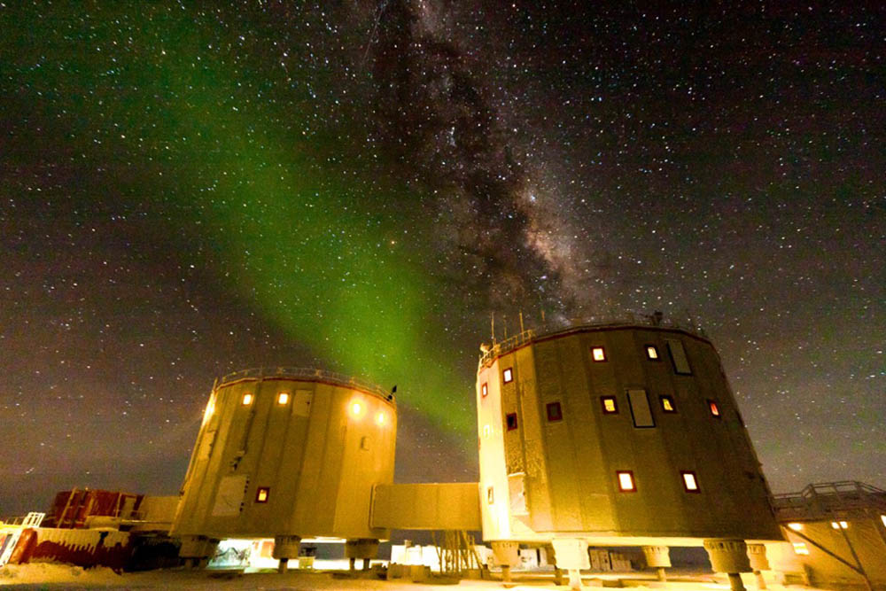
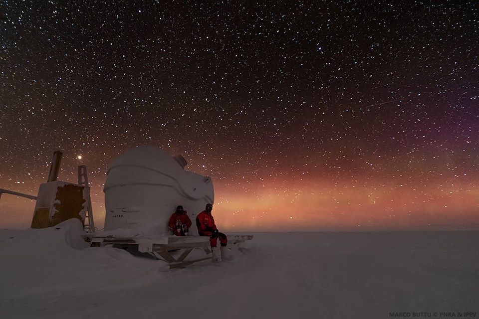
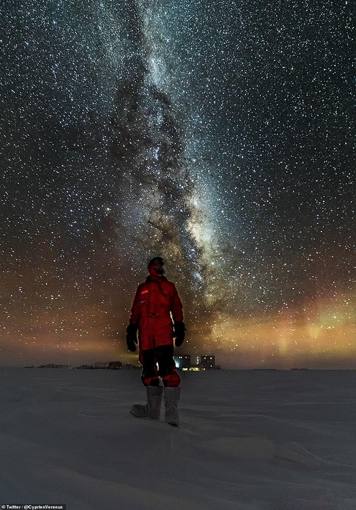
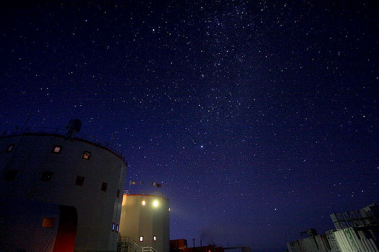
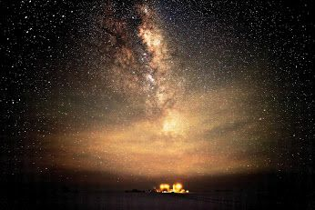
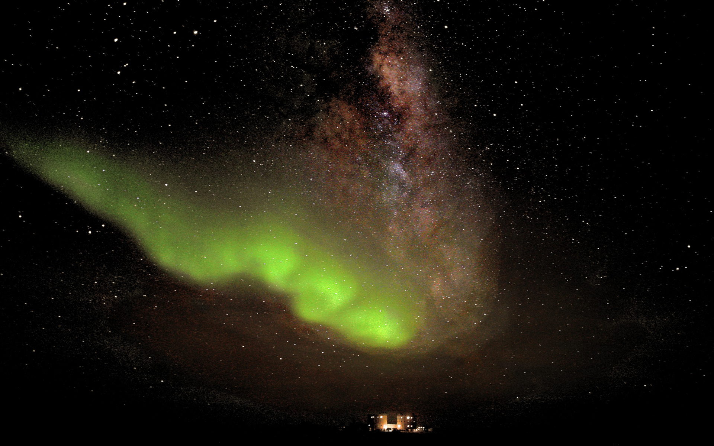
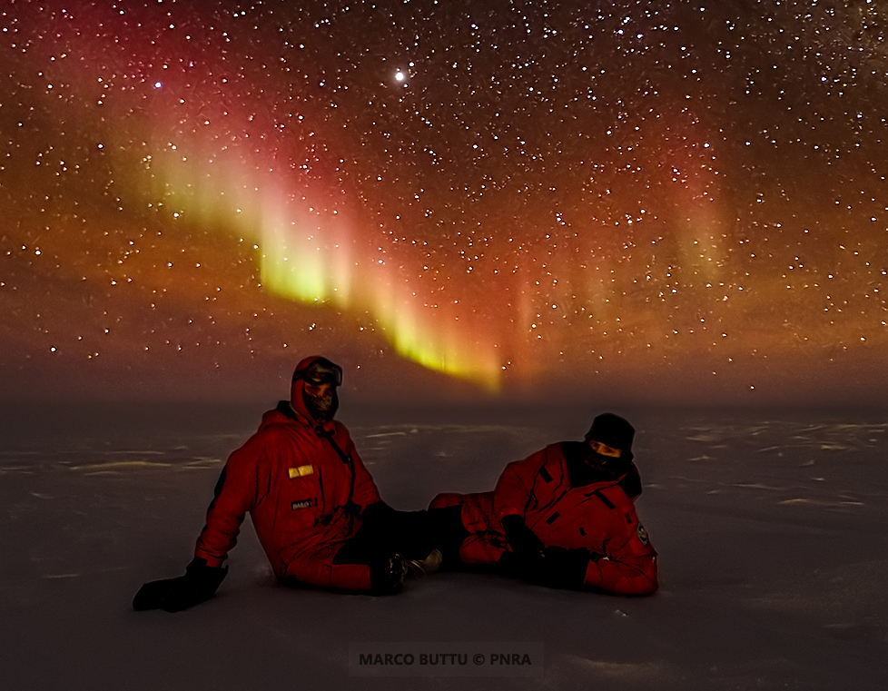

Concordia Research Station, which opened in 2005, is a French-Italian research facility that was built 3,233 m (2.0 mi) above sea level at a location called Dome C on the Antarctic Plateau, Antarctica. It is located 1,100 km (680 mi) inland from the French research station at Dumont D'Urville, 1,100 km (680 mi) inland from Australia's Casey Station and 1,200 km (750 mi) inland from the Italian Zucchelli Station at Terra Nova Bay. Russia's Vostok Station is 560 km (350 mi) away. The Geographic South Pole is 1,670 km (1,040 mi) away. The facility is also located within Australia's claim on Antarctica, the Australian Antarctic Territory.
Concordia Station is the third permanent, all-year research station on the Antarctic Plateau besides Vostok Station (Russian) and the Amundsen–Scott South Pole Station(U.S.) at the Geographic South Pole. It is jointly operated by scientists from France and Italy and regularly hosts ESA scientists.
Most of the cargo is moved to Dome C by traverse from Dumont d'Urville Station, covering 1,200 km in 7 to 12 days depending on weather conditions. Station personnel and light cargo arrive by air, using Twin Otter aircraft from DDU or Mario Zucchelli Station at 1200 km.
Dome C is situated on top of the Antarctic Plateau. No animals or plants live at a distance of more than a few tens of kilometers from the Southern Ocean. However, south polar skuas have been spotted overflying the station, 1,200 km away from their nearest food sources. It is believed that these birds have learned to cross the continent instead of circumnavigating it.
The climate at Dome C where Concordia Station is located is frigid all year round, being one of the coldest places on Earth. It has a polar ice cap climate (Köppen EF), with maximums ranging from -24.8 °C (-12.6 °F) in December to -62 °C (-80 °F) in May, mean ranging from -30.4 °C (-22.7 °F) in December to -65.3 °C (-85.5 °F) in May and minimums ranging from -36.1 °C (-33.0 °F) in December to -68.7 °C (-91.7 °F) in May.




Temperature in the middle of the antartic winter
Antarctica has six months of darkness in its winter
Antarctica has six months of daylight in its summer